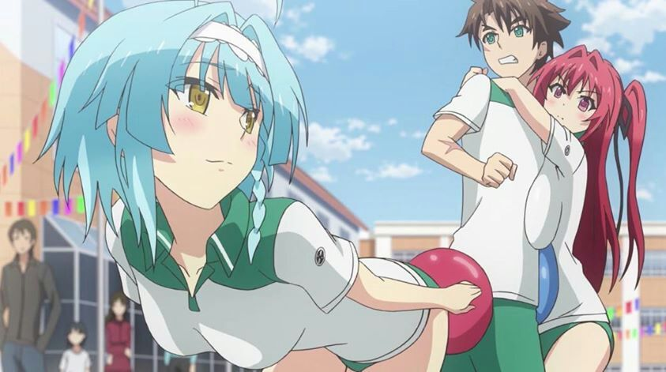

Disclaimer: This review covers "The Testament of Sister New Devil" (Season 1) (12 episodes + 1 OVA) and "The Testament of Sister New Devil BURST" (Season 2) (10 episodes + 1 OVA). It took a while, but I finally got around to the infamous fantasy anime "The Testament of Sister New Devil." It's one of several existing shows that have formed their own sub-genre: "fan-service heavy action-fantasy featuring red-headed devil girl as the lead." The premise is a little too familar to "High School DxD" and "So I Can't Play H!," to name a few. It's easy to dismiss all of these shows, but there are subtle differences between them. Of the three I mentioned, "DxD" is probably the most fun, "H!" has the most interesting story, and "Testament"... well, like it says on the box, is the most shamelessly erotic. In fact, that was the rumored reason for the show's stalled home video release; was it too sexy to sell outside of Japan? The wait wasn't ultimately that long, and perhaps had more to do with the license coming from Crunchyroll, exclusively known for their streaming site, and with little to no framework to print their own discs (and English dubs being a new thing for them). Like they did with other shows, they partnered with different competitors to sell the products, in this case with Funimation. Uncensored, and with the OVA episodes too, as such a viewer would demand. The story starts out attempting to trick the viewer, where lead male character Basara is introduced to his two new sisters, after learning that his father is getting remarried to their mother. All in high-school, it sounds like an opportunity for sexy shenanigans, especially when they move in together and ther father is called out to a business trip for a few weeks. But that first night, the sisters, Mio and Maria, reveal themselves to be demons, having altered Basara's father's memory to use the house as their safe base, and about to trick Basara to leave the building himself. It's then that we learn that Basara himself is a "Hero," in this secret world of devils and heroes and knights, allowing him to be immune to their magic. The father, a skilled hero himself, was aware of the situation too. Mio is known to be the daughter and hier to the Demon Lord of her realm, who was assassinated some months earlier, and Mio herself is at risk to further attacks. Maria is her loyal servant, a petite succubus. Understanding the situation, Basara agrees to allow them to live as brother and sisters as planned, and to fight to protect them from any demons that appear in the town. To further enhance their strength to fight, Mio and Basara agree to form a "Testament Pact" between master and servant... but by accident, Basara is made as the master. And with Maria's succubus magic driving the pact, it causes Mio to become very... sensitive, and requires Basara to regularly force her into... submission... for the effects to grow. As the series continues, there's actually a fare bit of lore to invest yourself into, with dramtatic twists and conflicts to keep the viewer engaged. But it is also, for the most part, very standard and par for the course in the genre, with very little to differentiate it from other anime. I didn't really have any interest in the world-building either, be it in the magic spells, grand beasts, or political hierarchy. The director is probably most at fault here. A big problem is just the poor and inconsistent characterization. Some characters delibarately have secret alter egos, which gives some of them a cool persona. But in the case of Basara, the lead: he changes from stoic hero to sex fiend to kind brother to shy and defensive, sometimes all within a few moments. Mio is the hier to a kingdom, but doesn't have the skills or confidence for it, and switches from hating and loving Basara on a dime. Her catchphrase of "don't make me angry, or I'll kill you a hundred times!" doesn't make her any more interesting. This is an issue throughout the cast, with Maria being the only consistent and fun character (albiet cringe-inducing, for encouraging sex to occur at every moment).  But there's sexy stuff to keep the viewer to the screen. There's a lot of it, relatively speaking... as much as 1/4 of an episode is dedicated to these sort of scenes, and that's not including the OVA. That's a lot, when most other anime of the same genre typically has less than a minute per episode of that sort of content. Basara's group quickly grows from just Mio and Maria to a full harem, most of whom are spellbound into this bizarre pact. Out of nowhere, a girl might suddenly become sensitive as if triggered by an aphrodisiac, and requires Basara to subdue them for the effects to pass, in addition to the side effects of their strength and bonds growing. This requires Basara to massage them where they're most sensitive: for Mio, it's groping her breasts like a stress-ball. For others, it might be the butt, or the ears. To further enhance the stimulus, they might incorporate soap and water, lotion, maple syrup, roleplaying, and more. It's not technically sex, since Basara's pants usually stay on, but otherwise the foreplay is as close to sex as any Japanese tv network is likely willing to show. If that's what you're here for, there's plenty of it, and each scene is worthy pause and fantasize with. It's a little gross too, depending on your fetish preferences, especially since the "brother-sister" relationship is maintained throughout. But with the poses and visuals on display, it's safe to say this is one of the most "not-safe-for-work" action anime I've ever seen. Of course, the original manga the show's based on continues the story further, and apparently, does result in the characters finally doing the deed, so there is canon material to seek out.The production values on "Testament" has been compared to a hentai, which is legitimate anime porn and typically of poor quality. Indeed, the animation isn't great, and it hurts even more to think that it was produced as recently as 2015. But that doesn't give credit to the scenes that do animate well: a few shots in the fight scenes pop, and the fan-service scenes are animated with extra attention. The average of it all is roughly on par with the average anime, even though the majority of the scenes are rather poor. However, the visual design never quite worked. Character designs look off, with weird eyes and faces, and generic outfits and body types. The exceptions are some (and not most) of the demon designs, and perhaps Basara's epic portrait when he's in full power mode. As expected, the English dub is servicable, but not great, with the exception being when things get serious, and enemies and heroes alike use cooler, deeper voices. And I can't imagine how they felt voicing the not-really-sex-sex scenes, so give them credit for the bravery. The soundtrack turned out to be the best part of the series. Yes, it's typical and could have been used in virtually any other show, but I'm a sucker for good J-POP openings and dramatic battle music. I think I'm experiencing a little bit of fatigue that's swaying my opinion... how many anime about sexy red-headed demon princesses do we need anyway? As far as quality goes, this is a step below top examples in the genre, but not by as much as you'd think. And in fan-service, this takes the cake, delivering beyond its competition. There seems to be a loyal audience for it; there's some feature-length OVA continuing the story, and that will have almost completed the manga's story.
- "Ani" More reviews can be found at : https://2danicritic.github.io/ Previous review: review_The_Tatami_Galaxy Next review: review_The_Thief_and_the_Cobbler